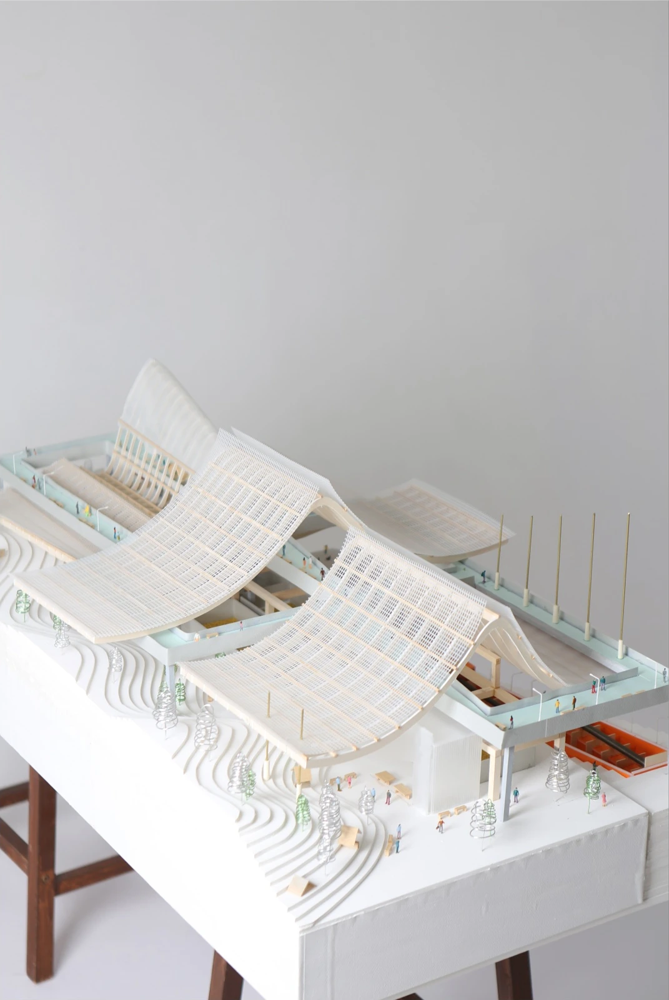

Vol. 01 [ Scroll down ]Latest[23]
[ View all ]Works[23]
About
I’m an architectural designer and urban researcher from Seoul, based in New York. I study how urban infrastructure works in everyday life and how design can adapt it to serve the people around it.
Education
M.S. in Architecture and Urban Design · 2026–Present
Experience
Architectural Designer, Hi-Tech Architecture Team · 2020–2022
Worked on new construction and renovations for Samsung’s semiconductor facilities and industrial plants.
Additional design experience at JEO Architects, Junglim Architects, and Studio Artisticks.
Research
-
Master’s Thesis · 2024
Study on Architectural Strategies for Utilizing Urban Logistics Facilities
-
Conference Presentation · 2023
Low-Rise Area Activation in Urban Redevelopment: A Case Study of Marunouchi Building in Tokyo
-
Technical Article · 2023
Layered Hub - A BIM Based Urban Mobility Hub Design Proposal
Exhibition
-
Seoul Biennale of Architecture and Urbanism · 2023
VOIDSCAPE
Awards
- MWU Unity Korea Award1st Prize · 2024
- Docomomo Korea Urban Design Competition2nd Prize · 2023
- Young Architects CompetitionsHonorable Mention · 2023
- Gyeonggi Architecture CompetitionSpecial Award · 2022
- BIM Korea Award1st Prize · 2022
- Docomomo Korea Urban Design CompetitionHonorable Mention · 2020
- Samoo Design Workshop (SDW)Top Prize · 2019
- Jeonglim Student Architecture CompetitionSpecial Selection · 2019
- International Youth Spatial Design CompetitionSpecial Selection · 2018
- SH Youth Architecture Competition3rd Prize · 2018
- Seoul Social Housing Competition2nd Prize · 2017
Certifications
- ACP (Autodesk Certified Professional), BIM Revit
- BIM Operation Specialist Certificate, Level 2